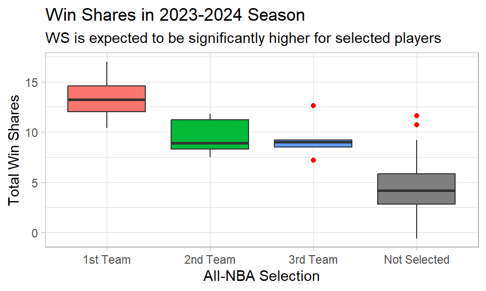
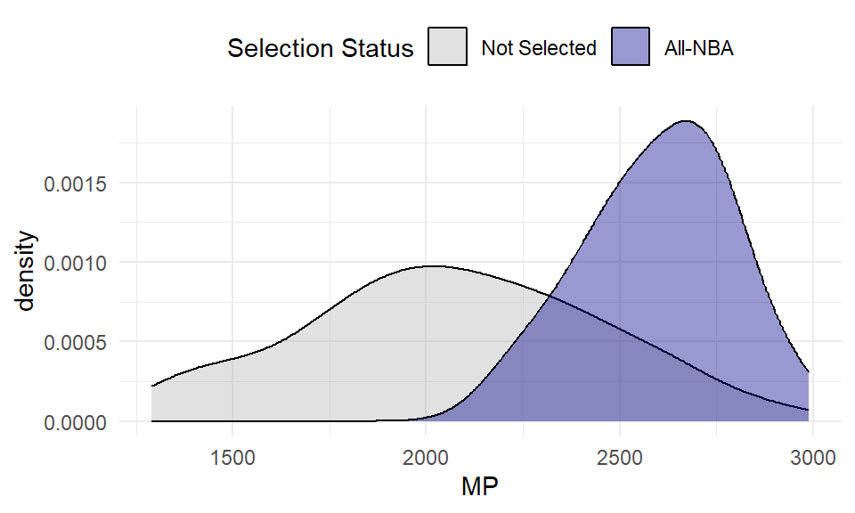
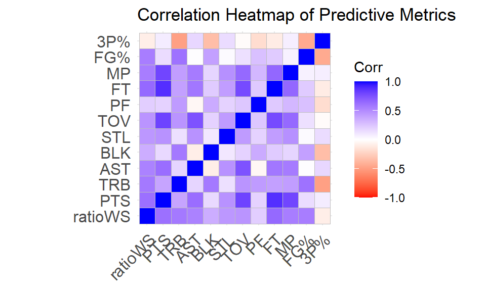
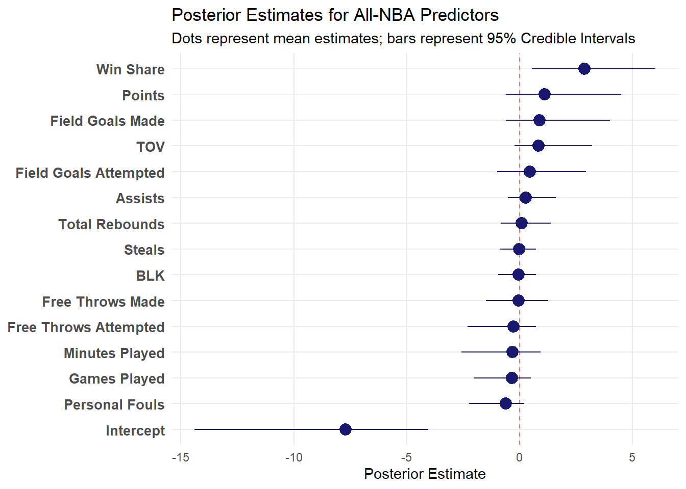

Case Study 2 Report
All-NBA Selection Prediction Using Advanced Metrics
Abstract
The All-NBA Team is a NBA accolade that awards players for great regular season performance. Using advanced statistics and box scores, we managed to predict All-NBA selection with good sensitivity (12/15 correct selections). The findings showcase the predictive power of advanced statistics like win share. It also shows that advanced metrics capture a significant portion of a player’s performance in one number that is not readily apparent from the box score alone. Despite the small validation set, this Bayesian logistic regression offers a strong baseline for future work to improve upon.
1 Introduction
Background
The All-NBA Team is one of the National Basketball Association’s most prestigious individual honors. It is awarded to the players that have performed at the highest level during the regular season. The selections have been determined through voting by a panel of 100 sportswriters and broadcasters, with players ranked based on ballot points. The top five players are assigned to first (best), the next five best players to the second team, and 11th-15th ranked players to the third team. These awards not only count towards a player’s legacy, but also their salary (contract incentives), reputation, and Hall of Fame consideration.
Advances in computing and game-tracking have led to new basketball metrics and available data. Advanced metrics like win share attempt to quantify player contribution to a team’s wins in one number to objectively measure player performance. Modelling all-NBA selections using objective metrics not only proves or disproves the value of some of these metrics, but can also highlight the impact subjective measures like voter fatigue, reluctance to repeatedly vote for the same dominant players, or popularity have on NBA awards.
Study Aims
The study will examine player box scores at the end of a season and calculate advanced statistics, namely win share, to identify if All-NBA status can be predicted from metrics using a generalized linear mixed effect model (GLMM). The primary aim of the study will be to determine the predictive value of win shares on all-NBA selection. Secondary aims will look at other advanced metrics like box-plus-minus in comparison with win share.
2 Data
The data for this study comes from Basketball Reference, a website that aggregates several basketball statistics. The key variables of interest are is_all_nba, a binary variable indicating whether a player was selected, and ratioWS, which is a rational number representing the win share of the player. Win share is a metric that attempts to divide up a team’s wins to its player proportionally by contribution (Sports Reference).
The dataset includes NBA players with 65 games played and average over 20 minutes in those games, based on selection criteria for the award. There is no missing data, due to meticulous stat-tracking.
3 Methods
Statistical Model
The probability of selection is modeled using a logistic link:
\[ logit(p_i) = \beta_0 + \beta_1 ratioWS_i + \beta_2 G_i + \beta_3 MP_i + \beta_4 FG_i + \beta_5 FGA_i + \beta_6 FT_i + \beta_7 FTA_i + \\ \beta_8 TRB_i + \beta_9 AST_i + \beta_{10} STL_i + \beta_{11} BLK_i + \beta_{12} TOV_i + \beta_{13} PF_i + \beta_{14} PTS_i \]
where all predictor variables are standardized. These predictors were chosen from the full list of variables to avoid choosing variables that are too similar to other variables.
To perform shrinkage and automatic variable selection, the regression coefficients are assigned a horseshoe prior:
\[ \beta_j \ | \ \tau^2, \lambda_j^2 \sim \mathcal{N}(0, \tau^2 \lambda_j^2), \quad j = 1, \ldots, 14 \]
\[ \lambda_j \sim C^{+}(0,1) \]
\[ \tau \sim C^{+}(0,\tau_0) \]
where \(C^{+}(0,1)\) denotes the half-Cauchy distribution. The global parameter \(\tau\) controls overall shrinkage, while the local parameters \(\lambda_j\) allow individual coefficients to escape shrinkage when strongly supported by the data.Let \(Y_i\) denote whether player \(i\) was selected to an All-NBA team. \(\tau_0\) indicates the shrinkage corresponding to the expected number of true predictors (7 out of 14 in this case) (Carvalho 2009).
Model Selection and Diagnostics
Because the initial frequentist model did not converge, likely due to multicollinearity and the large number of parameters to estimate, I fit a Bayesian logistic regression with a horseshoe prior to shrink estimates to handle the multicollinear, small dataset. Due to the relatively small dataset available, methods that rely on hyperparameter tuning like LASSO or Ridge regression are unsuitable for variable selection. All predictors were standardized, so each coefficient corresponds to a one standard deviation increase in the predictor. Posterior sampling mixed well (all \(\hat{R}\approx 1.00\) and effective sample sizes \(>1000\)), indicating convergence and stable posterior estimates.
4 Results
In Figure 1, there is a clear distinction in win shares across the 4 different selection groups. This indicates that win shares can be used as a useful predictor. There is, however, some overlap between the all-NBA groups and some of the unselected players, meaning that win shares alone cannot predict all-NBA status.
The table below (Table 1), shows the final regression output for the model coefficients. The model was trained on the 2023-2024 season data and includes a 95% credible interval for each of the estimates. The intercept is strongly negative, as expected, indicating a 0% probability for someone who has not played at all. Win share, field goals made, turnovers, and points all have large to moderately large coefficients (>0.75). The other predictors in the model have moderate to small coefficients.
| Estimate | Lower CI | Upper CI | |
|---|---|---|---|
| Intercept | -7.64 | -14.17 | -4.08 |
| ratioWS | 2.88 | 0.63 | 6.18 |
| G | -0.33 | -2.05 | 0.43 |
| MP | -0.34 | -2.66 | 0.73 |
| FG | 0.96 | -0.56 | 4.24 |
| FGA | 0.49 | -0.86 | 3.03 |
| FT | -0.04 | -1.47 | 1.25 |
| FTA | -0.25 | -2.19 | 0.72 |
| TRB | 0.07 | -0.92 | 1.37 |
| AST | 0.25 | -0.57 | 1.66 |
| STL | -0.03 | -0.89 | 0.67 |
| BLK | -0.05 | -1.02 | 0.66 |
| TOV | 0.84 | -0.23 | 3.16 |
| PF | -0.59 | -2.31 | 0.22 |
| PTS | 0.93 | -0.76 | 4.57 |
Since there are only two seasons since the all-NBA eligibility rules changed, the 2023-2024 season data was used to fit the model validated against the 2024-2025 season outcomes. The model succesfully identified 12 out of the 15 (~80%) all-NBA selections as shown in Table 2 below.
| Player | All-NBA | Predicted Label | Estimate | Estimate Uncertainty |
|---|---|---|---|---|
| Shai Gilgeous-Alexander | 1st Team | 1 | 1.00 | 0.01 |
| Nikola Jokic | 1st Team | 1 | 1.00 | 0.01 |
| Giannis Antetokounmpo | 1st Team | 1 | 0.96 | 0.09 |
| Jayson Tatum | 1st Team | 1 | 0.85 | 0.13 |
| Anthony Edwards | 2nd Team | 1 | 0.81 | 0.17 |
| LeBron James | 2nd Team | 1 | 0.77 | 0.21 |
| Stephen Curry | 2nd Team | 1 | 0.63 | 0.23 |
| James Harden | 3rd Team | 1 | 0.61 | 0.31 |
| Tyrese Haliburton | 3rd Team | 1 | 0.59 | 0.28 |
| Tyler Herro | Not Selected | 1 | 0.58 | 0.26 |
| Karl-Anthony Towns | 3rd Team | 1 | 0.55 | 0.30 |
| Ivica Zubac | Not Selected | 1 | 0.55 | 0.30 |
| Cade Cunningham | 3rd Team | 1 | 0.51 | 0.31 |
| Jalen Brunson | 2nd Team | 1 | 0.51 | 0.24 |
| Trae Young | Not Selected | 1 | 0.46 | 0.34 |
| Donovan Mitchell | 1st Team | 0 | 0.31 | 0.19 |
| Evan Mobley | 2nd Team | 0 | 0.21 | 0.17 |
| Jalen Williams | 3rd Team | 0 | 0.20 | 0.14 |
5 Discussion
The posterior suggests that win share is the strongest predictor of All-NBA selection. Not only does it have the largest coefficient by magnitude, but it is also the only strongly positive coefficient, with a credible interval that does not contain 0 (\(\beta=2.8\), 95% CrI: (0.75 to 6.19). This coefficient translates to: a standard deviation increase in win shares increases the probaility of all-NBA selection by approximately 95%. This supports the primary aim that win shares contain meaningful a predictive signal for All-NBA outcomes. Other variables such as minutes played (MP), steals (STL), blocks (BLK), and personal fouls (PF) had posterior intervals overlapping zero in this fit, suggesting weaker predictive value. Other notable variables with moderately large coefficients (0.75-1) include field goals made (FG), points (PTS), and turnovers (TO). Interestingly, turnovers, which is a negative statistic, has a positive coefficient. The model interpretation implies that a high number of turnovers actually increases a player’s all-NBA selection chances. One possible explanation could be that players who handle the ball more frequently have more turnovers. If a player has a significant amount of turnovers without being benched or sidelined, then they must be providing value in other ways. Even though the model successfully identified 80% of All-NBA selections, it is still only one season. More data is needed to fully validate the model.
Looking at other advanced metrics, box-plus-minus (BPM) and value-over-replacement-player (VORP), they also show similar positive coefficients when each metric is substituted for win share Appendix. This indicates that these advanced metrics do have significant predictive power. The magnitude and relatively narrow credible intervals mean that there is value in examining advanced statistics. It also provides casual fans an objective idea of a player’s performance without watching the game.
Limitations
The validation and training sets are both quite small, containing only 15 positive values each. The small datasets means that the choice of prior is very important in determining the posterior. The model used weakly informative prior on scaled predictors, where the choice of expected predictors was arbitrary. This means that there is room for improved prior selection. In addition, different predictors can also improve the model performance. For instance, team statistics like team record or even removing variables contributing to multi-collinearity may lead to better performance and more interpretable coefficients.
In addition, the model also ignores the time series structure of all-NBA voting. For instance, a player’s previous season’s performance might somehow affect voter’s perception of the player’s current season performance. Any correlation across time is ignored.
Conclusion
This study shows that advanced metrics along with box score statistics can predict all-NBA selections with reasonably good sensitivity (80% out-of-sample). Win shares emerged as the most informative predictor among 14 total predictors analyzed. Other intangible factors like leadership, gameplanning, and teammate chemistry could also play a large role in determining all-NBA selection that won’t necessarily be captured in the box score or advanced metrics derived from the box score. Future work could incorporate team record, popularity (social media mentions/views), and position/role indicators, and could evaluate performance across several years with enough data.
6 References
Sports Reference LLC “2024-25 NBA Player Stats: Totals” Basketball-Reference.com - Basketball Statistics and History. https://www.basketball-reference.com/. Data pulled on: Feb. 03, 2026.
Popovic, G. (2022). Generalised mixed models. Environmental Computing. https://environmentalcomputing.net/statistics/mixed-models/mixed-model-3/
Bresler A (2026). _nbastatR: R’s interface to NBA data_. R package version 0.1.153, commit f1e25e746f8a9dffdd7cc4eb3666efb37fc6a8b9, <https://github.com/abresler/nbastatR>.
Carvalho, C.M., Polson, N.G. & Scott, J.G.. (2009). Handling Sparsity via the Horseshoe. Proceedings of the Twelfth International Conference on Artificial Intelligence and Statistics, in Proceedings of Machine Learning Research 5:73-80 Available from https://proceedings.mlr.press/v5/carvalho09a.html.
Piironen, J., & Vehtari, A. (2017, April). On the hyperprior choice for the global shrinkage parameter in the horseshoe prior. In Artificial intelligence and statistics (pp. 905-913). PMLR.
Google. (2026). Gemini (3 Thinking/Flash version) [Large language model]. https://gemini.google.com/
OpenAI. (2026). ChatGPT (5.4 Thinking version) [Large language model]. https://chat.openai.com/chat
AI Disclosure
AI was used to create/edit/debug code, edit text, generate LaTex code, generate modelling ideas, and compare and contrast different ideas.
AI model
Gemini 3 Thinking version developed by Google
ChatGPT 5.4 Thinking version developed by OpenAI
AI Transcripts
Bayesian Horseshoe prior limitations and design:
Bayesian ‘probability of direction’ and variable selection with multicollinearity: https://gemini.google.com/share/aaa5ba31f51f
BRMS R Code: https://gemini.google.com/share/ee530cd2d6aa
GLMM R Code: https://gemini.google.com/share/7852a5551064
Quarto Markdown syntax: https://chatgpt.com/share/69ae225b-58b4-8004-ad43-6dd99a9fd34c
Appendix
Exploratory Data Analysis (cont.)
| variable | Mean | Standard Deviation | Median | 90th Percentile |
|---|---|---|---|---|
| Rk | 103.6226415 | 66.2240806 | 100.000 | 190.4000 |
| Age | 26.7421384 | 4.2024915 | 26.000 | 33.0000 |
| G | 74.5597484 | 4.8893985 | 75.000 | 82.0000 |
| GS | 51.3333333 | 26.0925002 | 63.000 | 78.0000 |
| MP | 2115.7106918 | 398.6497836 | 2113.000 | 2632.2000 |
| FG | 398.1635220 | 162.3015195 | 360.000 | 640.4000 |
| FGA | 828.5408805 | 326.1726603 | 763.000 | 1306.6000 |
| FG% | 0.4818176 | 0.0591816 | 0.465 | 0.5560 |
| 3P | 120.4465409 | 69.2233267 | 119.000 | 212.4000 |
| 3PA | 323.7610063 | 174.8595624 | 332.000 | 558.4000 |
| 3P% | 0.3517707 | 0.0768959 | 0.365 | 0.4140 |
| 2P | 277.7169811 | 153.1412491 | 240.000 | 507.8000 |
| 2PA | 504.7798742 | 268.7421155 | 453.000 | 906.4000 |
| 2P% | 0.5493019 | 0.0525400 | 0.546 | 0.6236 |
| eFG% | 0.5566164 | 0.0443760 | 0.557 | 0.6090 |
| FT | 162.8930818 | 115.3975293 | 129.000 | 320.0000 |
| FTA | 205.4339623 | 143.4633340 | 166.000 | 415.4000 |
| FT% | 0.7913711 | 0.0738524 | 0.804 | 0.8780 |
| ORB | 83.8050314 | 63.2012536 | 64.000 | 187.0000 |
| DRB | 291.0943396 | 143.7434332 | 247.000 | 484.2000 |
| TRB | 374.8993711 | 194.6186207 | 317.000 | 647.2000 |
| AST | 247.8679245 | 150.5436189 | 216.000 | 466.4000 |
| STL | 64.4402516 | 22.6054746 | 63.000 | 92.0000 |
| BLK | 45.4465409 | 37.7150623 | 37.000 | 81.4000 |
| TOV | 115.6477987 | 54.2922400 | 105.000 | 190.2000 |
| PF | 154.3270440 | 42.5905583 | 152.000 | 210.0000 |
| PTS | 1079.6666667 | 453.2412199 | 974.000 | 1780.8000 |
| Trp-Dbl | 0.7547170 | 3.4305349 | 0.000 | 1.0000 |
| ratioWS | 4.9792453 | 2.9301375 | 4.500 | 8.5000 |
| ratioOWS | 2.7817610 | 2.3109770 | 2.300 | 5.8000 |
| ratioDWS | 2.1981132 | 1.0334575 | 2.000 | 3.5200 |
| ratioWSPer48 | 0.1102956 | 0.0538236 | 0.106 | 0.1812 |
| ratioOBPM | 0.4792453 | 2.3706826 | 0.200 | 3.5600 |
| ratioDBPM | 0.0176101 | 1.1946894 | -0.200 | 1.6200 |
| ratioBPM | 0.4974843 | 2.8968326 | 0.100 | 3.8000 |
| ratioVORP | 1.4616352 | 1.8416008 | 1.000 | 3.6200 |
Usage and All-NBA
A common expression in the NBA is “availability is the best ability”. The graph below shows that all-NBA players have higher minutes played compared to other players, indicating higher usage. The best players typically play the most minutes in a game, but there is not enough separation in the distribution to use minutes alone.

Correlation Plot With Selected Predictors
The correlation plot below shows that there is a moderate correlation between some of the key predictors. The largest of which is free throw attempts and points, which make sense as they go hand in hand. There also also moderate correlations between minutes played and points, turnovers and assists, free throwws and turnovers.

Logistic GLMM (Initial Model)
Assumptions
The model assumptions are as follows (Popovic):
Observations are independent conditional on predictors and random effects.
The response variable follows a distribution from the exponential family (e.g., binomial, Poisson, Gaussian).
A link function (logit) defines a linear relationship between predictors and the mean response.
Random effects are independent of the response.
Random effects are typically normally distributed.
Model Assessment
To test the assumptions, the random effects should be approximately normally distributed. This can be checked with a Q-Q plot. The residuals should also not be correlated with the fixed effects, which can be checked with a scatter plot of the partial residuals. The Intraclass Correlation Coefficient (ICC) will provide a measure of what percentage of the variation is explained by the team rather than the individual stats.
The performance of the model can be evaluated using a AUC-PR metric, which measures the area under the the precision recall curve of the model. This metric works better for unbalanced data sets like this one with 10% of the data coming in the minority class. Other metrics that could also be useful are ROC AUC, f1 score, and accuracy.
Unfortunately, the initially proposed model did not converge. This means that the coefficients and the p-values cannot be interpreted.
Call:
glm(formula = is_all_nba ~ ratioWS + G + MP + FG + FGA + `3P` +
FT + FTA + TRB + AST + STL + BLK + TOV + PF + PTS, family = binomial(link = "logit"),
data = player_df_scaled)
Coefficients: (1 not defined because of singularities)
Estimate Std. Error z value Pr(>|z|)
(Intercept) -6.842e+01 2.199e+05 0 1
ratioWS 5.484e+01 3.832e+05 0 1
G -4.317e-02 4.193e+04 0 1
MP -3.282e+01 9.337e+04 0 1
FG 5.431e+00 8.620e+05 0 1
FGA 4.592e+01 7.528e+05 0 1
`3P` -1.500e-01 1.763e+03 0 1
FT 4.167e+01 3.436e+05 0 1
FTA -7.094e+01 2.786e+05 0 1
TRB -5.413e+00 1.375e+05 0 1
AST -5.915e+00 1.288e+05 0 1
STL -7.806e-02 3.778e+04 0 1
BLK -1.043e+00 4.374e+04 0 1
TOV 3.142e+01 1.147e+05 0 1
PF -5.969e+00 3.104e+04 0 1
PTS NA NA NA NA
(Dispersion parameter for binomial family taken to be 1)
Null deviance: 9.9364e+01 on 158 degrees of freedom
Residual deviance: 9.8786e-09 on 144 degrees of freedom
AIC: 30
Number of Fisher Scoring iterations: 25Logistic Regression with LASSO
Removing the random effect should help the algorithm converge, as it removes additional variables that don’t have to be estimated. LASSO should help with variable selection as there is definitely multicollinearity in the equation as specified. However, variable selection methods are fragile with small, noisy datasets.
Bayesian Logistic Regression with Horseshoe Prior
For prediction, shrinkage is often better than selection, especially with sparse signals (Carvalho). The probability of selection is modeled using a logistic link:
\[ \text{logit}(p_i) = \beta_0 + \beta_1 \text{ratioWS}_i + \beta_2 G_i + \beta_3 MP_i + \beta_4 FG_i + \beta_5 FGA_i + \beta_6 FT_i + \beta_7 FTA_i + \\ \beta_8 TRB_i + \beta_9 AST_i + \beta_{10} STL_i + \beta_{11} BLK_i + \beta_{12} TOV_i + \beta_{13} PF_i + \beta_{14} PTS_i \]
where all predictor variables are standardized.
To perform shrinkage and automatic variable selection, the regression coefficients are assigned a horseshoe prior:
\[ \beta_j \ | \ \tau^2, \lambda_j^2 \sim \mathcal{N}(0, \tau^2 \lambda_j^2), \quad j = 1, \ldots, 14 \]
\[ \lambda_j \sim C^{+}(0,1) \]
\[ \tau \sim C^{+}(0,\tau_0) \]
where \(C^{+}(0,1)\) denotes the half-Cauchy distribution. The global parameter \(\tau\) controls overall shrinkage, while the local parameters \(\lambda_j\) allow individual coefficients to escape shrinkage when strongly supported by the data.Let \(Y_i\) denote whether player \(i\) was selected to an All-NBA team. \(\tau_0\) indicates the shrinkage corresponding to the expected number of true predictors (7 out of 14 in this case) (Carvalho 2009).
| Estimate | Lower CI | Upper CI | |
|---|---|---|---|
| Intercept | -7.51 | -14.02 | -4.10 |
| ratioWS | 2.79 | 0.57 | 5.99 |
| G | -0.32 | -2.01 | 0.44 |
| MP | -0.30 | -2.55 | 0.89 |
| FG | 0.93 | -0.49 | 4.21 |
| FGA | 0.44 | -1.02 | 2.94 |
| FT | -0.04 | -1.45 | 1.27 |
| FTA | -0.25 | -2.21 | 0.78 |
| TRB | 0.08 | -0.85 | 1.34 |
| AST | 0.23 | -0.58 | 1.53 |
| STL | -0.03 | -0.85 | 0.69 |
| BLK | -0.05 | -0.94 | 0.69 |
| TOV | 0.80 | -0.25 | 3.04 |
| PF | -0.60 | -2.30 | 0.22 |
| PTS | 1.00 | -0.60 | 4.21 |

The “probability of direction” (pd) is the probability that a certain coefficient goes in a given direction. A 50% pd means that the variable could go in either direction. It is similar to p-values for frequentist models and can help provide a Bayesian alternative to the LASSO selection results from above.
The largest coefficient values are the ratioWS as expected. There is a moderate effect for TOV, PF, FG, and PTS.
| |Parameter | pd|
|:--|:-----------|-------:|
|8 |b_Intercept | 1.00000|
|12 |b_ratioWS | 0.99575|
|7 |b_G | 0.70850|
|9 |b_MP | 0.62400|
|3 |b_FG | 0.76025|
|4 |b_FGA | 0.68050|
|5 |b_FT | 0.52025|
|6 |b_FTA | 0.62475|
|15 |b_TRB | 0.55600|
|1 |b_AST | 0.68400|
|13 |b_STL | 0.52275|
|2 |b_BLK | 0.53425|
|14 |b_TOV | 0.83250|
|10 |b_PF | 0.83150|
|11 |b_PTS | 0.78625|Assumptions and Assessment
The model diagnostics look quite good as the Rhat for each parameter is 1 or extremely close to 1, indicating convergence. Both the bulk and tail effective sample size is greater than 1000, which means that the Markov Chain Monte Carlo sequences explored the sample space well.
The model also manages to correctly identify all 15 all-NBA players. The ranks for each player also closely match the 1st team, 2nd team, and 3rd team designations. This means that the model overall performs well.
Interpretation
Posterior estimates indicate that points scored and Win Share ratio are the strongest predictors of All-NBA selection. A one standard deviation increase in points corresponds to a large increase in the log-odds of selection (\(\beta\) = 4.15, 95% Cred. Int.: 1.82–7.97), while Win Share ratio also exhibits a substantial positive effect (\(\beta\) = 2.86, 95% Cred. Int: 0.85–5.94). In contrast, several defensive and playing time variables show posterior intervals overlapping zero, suggesting weaker or uncertain contributions once scoring and overall value metrics are included.
Model Training + Validation
The 2024-2025 season was used to validate the model. The accuracy of the model is slightly inflated as there are a large portion of true negatives ~90% of eligible players. The sensitivity (80%) is a better indication of model performance as 80% of the true positives where correctly identified, which is the goal of the model.
Advanced| Player | All-NBA | Predicted Label | Estimate | Estimate Uncertainty |
|---|---|---|---|---|
| Shai Gilgeous-Alexander | 1st Team | 1 | 0.9978675 | 0.0128501 |
| Nikola Jokic | 1st Team | 1 | 0.9976467 | 0.0143039 |
| Giannis Antetokounmpo | 1st Team | 1 | 0.9576694 | 0.0887159 |
| Jayson Tatum | 1st Team | 1 | 0.8537963 | 0.1270109 |
| Anthony Edwards | 2nd Team | 1 | 0.8085124 | 0.1749068 |
| LeBron James | 2nd Team | 1 | 0.7725396 | 0.2094534 |
| Stephen Curry | 2nd Team | 1 | 0.6263688 | 0.2257212 |
| James Harden | 3rd Team | 1 | 0.6094042 | 0.3111274 |
| Tyrese Haliburton | 3rd Team | 1 | 0.5870400 | 0.2845863 |
| Tyler Herro | Not Selected | 1 | 0.5823201 | 0.2569649 |
| Karl-Anthony Towns | 3rd Team | 1 | 0.5527105 | 0.3006192 |
| Ivica Zubac | Not Selected | 1 | 0.5517362 | 0.3018726 |
| Cade Cunningham | 3rd Team | 1 | 0.5107109 | 0.3105296 |
| Jalen Brunson | 2nd Team | 1 | 0.5101761 | 0.2414737 |
| Trae Young | Not Selected | 1 | 0.4633450 | 0.3368685 |
| Donovan Mitchell | 1st Team | 0 | 0.3096084 | 0.1893833 |
| Evan Mobley | 2nd Team | 0 | 0.2135125 | 0.1673535 |
| Jalen Williams | 3rd Team | 0 | 0.2016842 | 0.1356758 |
Secondary Aims
Comparing two models with BPM and VORP respectively instead of win share, we see that both have a strong positive coefficients. VORP is around the same magnitude as win share, while BPM is moderately lower.
| Estimate | Lower CI | Upper CI | |
|---|---|---|---|
| Intercept | -9.65 | -17.92 | -4.98 |
| ratioBPM | 1.63 | 0.63 | 3.33 |
| G | -0.01 | -0.84 | 0.74 |
| MP | 0.16 | -0.71 | 1.80 |
| FG | 0.61 | -0.45 | 3.47 |
| FGA | 0.28 | -0.65 | 2.37 |
| FT | 0.27 | -0.48 | 2.03 |
| FTA | 0.08 | -0.90 | 1.38 |
| TRB | 0.04 | -0.69 | 1.01 |
| AST | 0.08 | -0.60 | 1.08 |
| STL | -0.14 | -1.27 | 0.36 |
| BLK | -0.21 | -1.35 | 0.22 |
| TOV | 0.06 | -0.66 | 1.00 |
| PF | -0.04 | -0.93 | 0.70 |
| PTS | 0.75 | -0.41 | 3.90 |
| Estimate | Lower CI | Upper CI | |
|---|---|---|---|
| Intercept | -11.93 | -21.22 | -6.50 |
| ratioVORP | 2.74 | 1.24 | 5.14 |
| G | -0.06 | -0.89 | 0.43 |
| MP | -0.02 | -0.85 | 0.69 |
| FG | 0.27 | -0.32 | 2.19 |
| FGA | 0.13 | -0.54 | 1.65 |
| FT | 0.15 | -0.45 | 1.45 |
| FTA | 0.07 | -0.61 | 1.13 |
| TRB | 0.00 | -0.62 | 0.65 |
| AST | 0.01 | -0.57 | 0.66 |
| STL | -0.08 | -0.93 | 0.36 |
| BLK | -0.11 | -0.96 | 0.22 |
| TOV | 0.06 | -0.44 | 0.91 |
| PF | -0.04 | -0.85 | 0.55 |
| PTS | 0.33 | -0.35 | 2.69 |